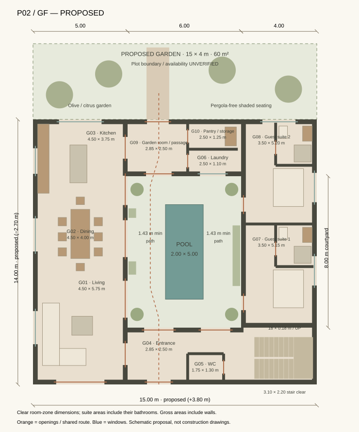
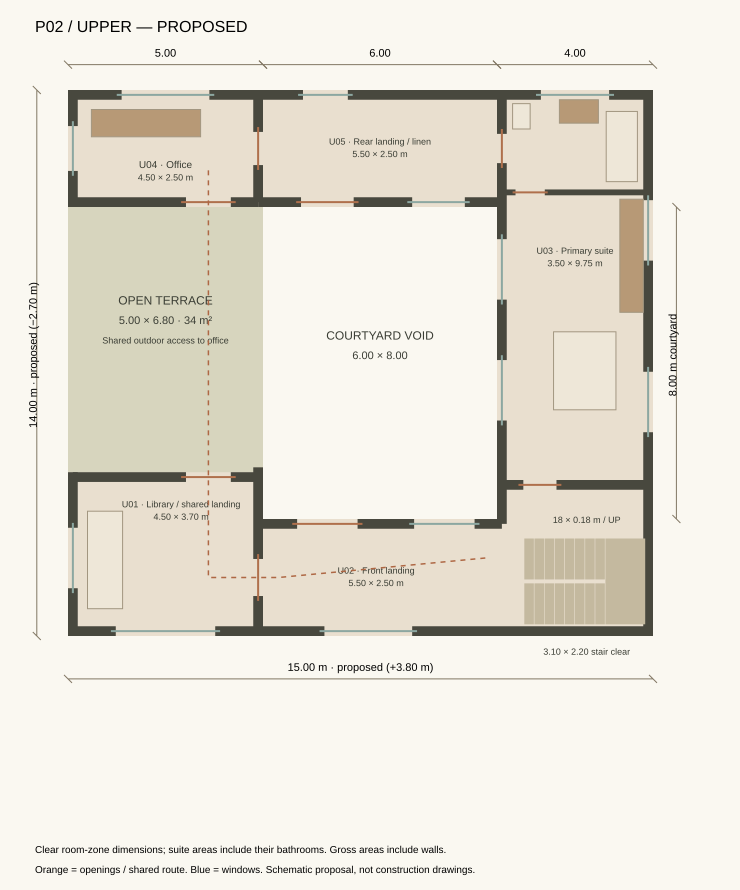
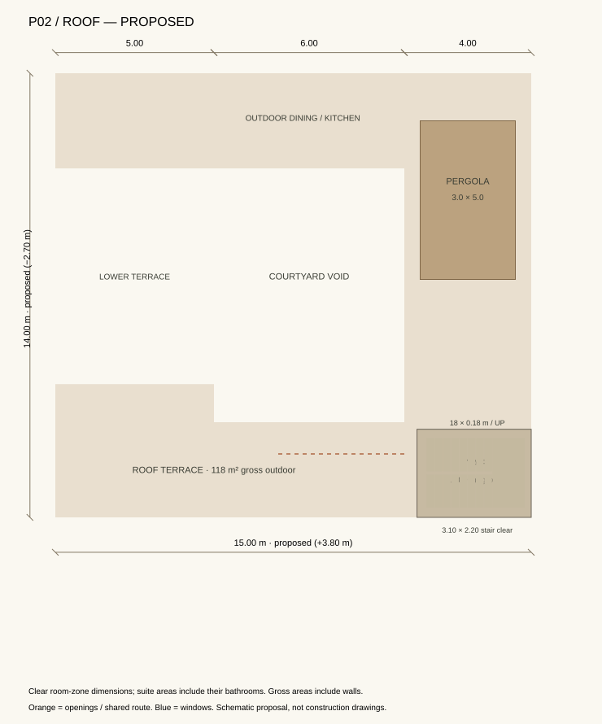

BYMOU / Casa Mirador / P02 / Architecture proposal
A courtyard house,
with room to live.
A wider, more open residence organised around one continuous pool axis. This revision prioritises generous shared spaces, three bedrooms, a private upper terrace and a connected rooftop garden.
FOR ARCHITECTURAL APPROVAL — NOT FINAL RENDERS
300 m²Enclosed gross across all levels
15 × 14 mProposed main footprint
60.75 m²Continuous living / dining / kitchen
6 × 8 mFully open courtyard
01 / Dimensional consequences
Wider wings. A clearer centre.
| Measure | Previous P01 | Revised P02 | Consequence |
|---|
| Main envelope | 11.20 × 16.70 m | 15.00 × 14.00 m | +3.80 m width / −2.70 m depth |
| Footprint envelope | 187.04 m² | 210.00 m² | +22.96 m²; land availability unverified |
| Courtyard band | 4.20 × 10.00 m, including arcade | 6.00 × 8.00 m, all open sky | Broader, less corridor-like; 48 m² outdoor |
| Pool | 1.60 × 4.20 m | 2.00 × 5.00 m | 10 m² water; proposed increase of 3.28 m² |
| Pool circulation | Approx. 1.20 m side routes | 2.00 m nominal sides / 1.50 m ends | Approx. 1.43 m minimum beside coping + planted pockets; doors kept clear |
| Bedroom count | 4 compact suites | 3 suites | 2 ground guest suites + 1 generous upper primary suite; shared library retained |
The original 11.20 m is treated as a reference width, not a verified site constraint. Every changed dimension is a proposal. No new plot boundary or ownership is assumed.
02 / One architectural reading
Resolving the conflicting references.
What is retained
The central pool axis, inward-facing courtyard, arched thresholds, warm tadelakt, travertine, timber, bronze and green zellige. A cedar pergola, outdoor dining, planting and kitchen remain on the rooftop.
The 11.20 m sketch locates the living/kitchen wing beside the courtyard, while the exploded reference puts the main living spaces upstairs. The furniture board introduces another arrangement and two stair positions. These cannot all describe one literal house.
The coherent P02 choice
Ground-floor public living opens directly to the courtyard. Two guest suites occupy the east wing. Upstairs contains the primary suite, shared library and office. One continuous U-stair connects entrance, upper level and roof.
The width, pool enlargement, three-bedroom programme, upper setback and garden are explicit design changes. The proposal preserves the references’ architectural character rather than reproducing their contradictory room placements.
03 / Complete plans
Rooms, openings and circulation.

Ground / 162 m² enclosed gross. The west wing has no partitions between living, dining and kitchen. The dashed garden envelope is a study area, not a known plot boundary.
Upper / 128 m² enclosed gross + 34 m² open terrace. Office access is via the shared library and outdoor terrace; no route crosses a private bedroom. This is intentionally open-air circulation.Three bedrooms, not four compressed suites. Guest suite zones are 18.03 and 18.20 m² including bathrooms. The primary suite is 34.12 m² including dressing and bathroom. Room-zone figures are clear planning dimensions and must not be added to calculate gross floor area.
| ID | Room / zone | Level | Clear zone | Zone area | Connections / use |
|---|
| G01 | Living | GF | 4.50 × 5.75 m | 25.88 m² | Open to dining; courtyard arches |
| G02 | Dining | GF | 4.50 × 4.00 m | 18.00 m² | 8-place table; no partition to living/kitchen |
| G03 | Kitchen | GF | 4.50 × 3.75 m | 16.88 m² | Island, 1.10 m working aisle; pantry nearby |
| G04 | Entrance | GF | 2.85 × 2.50 m | 7.12 m² | Entry → living / courtyard / stair lobby |
| G05 | WC | GF | 1.75 × 1.30 m | 2.28 m² | Guest powder room |
| G06 | Laundry | GF | 2.50 × 1.10 m | 2.75 m² | Rear utility cupboard; garden-room access |
| G07 | Guest suite 1 | GF | 3.50 × 5.15 m | 18.03 m² | Includes 1.85 × 2.10 m en-suite |
| G08 | Guest suite 2 | GF | 3.50 × 5.20 m | 18.20 m² | Includes 1.85 × 2.10 m en-suite |
| G09 | Garden room / passage | GF | 2.85 × 2.50 m | 7.12 m² | Court → kitchen / rear garden |
| G10 | Pantry / storage | GF | 2.50 × 1.25 m | 3.12 m² | Access from garden room |
| U01 | Library / shared landing | Upper | 4.50 × 3.70 m | 16.65 m² | Shared route to open terrace; not a fourth bedroom |
| U02 | Front landing | Upper | 5.50 × 2.50 m | 13.75 m² | Stair → library / primary suite |
| U03 | Primary suite | Upper | 3.50 × 9.75 m | 34.12 m² | Sleeping + dressing + 3.50 × 2.30 m bathroom |
| U04 | Office | Upper | 4.50 × 2.50 m | 11.25 m² | Access via open terrace; desk for two |
| U05 | Rear landing / linen | Upper | 5.50 × 2.50 m | 13.75 m² | Terrace → office / primary suite |
Bed, table, island, vanity and shower footprints are shown to test proportions. Courtyard arches and door thresholds are proposed as closeable glazed openings; their moving leaves are omitted from this schematic model. Final fixtures and door swings will be resolved after layout approval. Dining is open to adjacent zones; its eight seats are not enclosed in a separate room.
04 / Connected house
Assembled, at the same coordinates.
05 / Rooftop & landscape
Outdoor rooms are counted separately.

Roof stair headhouse: 3.60 × 2.778 m gross = 10 m². Pergola: 3 × 5 m, covering part of the open rooftop.
A proposed garden, not an assumed site.
The rear 15 × 4 m garden study adds 60 m² of potential outdoor space: olive and citrus trees, aromatic understory, a direct path from the garden room, and a shaded bench. It requires confirmation of available land and boundary conditions.
House plus the proposed rear garden requires a 15 × 18 m allocation, or 270 m², before any setbacks or other site requirements. This is not a claim that the plot measures 270 m².
Courtyard planting is concentrated in corner pots and low aromatic pockets. Beds stop before guest doors and arched thresholds. A garden-room door connects the pool court to the rear garden.
Area ledger
- Ground enclosed gross: 162 m²
- Upper enclosed gross: 128 m²
- Roof stair enclosure: 10 m²
- Total enclosed gross: 300 m²
Calculation: ground 210 − 48 = 162; upper 210 − 48 − 34 = 128; roof enclosure 10. Gross accounting includes walls and stair allocation on served levels.
- Courtyard: 48 m², including 10 m² pool
- Upper open terrace: 34 m²
- Roof outdoor gross: 118 m² before parapets / furniture
- Pergola shade: 15 m² within that roof area
- Rear garden proposal: 60 m²
None of these outdoor areas is included in the 300 m² enclosed total. Including the open pergola coverage would give 315 m² enclosed-plus-covered area; it is not 315 m² of indoor space.
06 / Verification & approval
Architecture first. Production follows approval.
Area arithmetic checked. 20 of 20 room and circulation targets are reachable in the schematic access audit. The 2D check uses wall breaks, window barriers, furniture, pool and planted beds at a 0.10 m grid with a 0.20 m body radius. It verifies schematic connectivity, not final walking-camera collision or construction compliance.
Stair flights, openings and floor levels exist as editable geometry. Full headroom, guard detailing, door swings, structural spans and weather protection remain detailed-design checks. The upstairs office uses an outdoor route; this is a visible design choice for approval.
Please approve or revise the 15 × 14 m envelope, three-bedroom programme, courtyard/pool enlargement, open upper circulation and proposed garden before detailed architectural visualisation. Final photoreal renders, walkthrough videos and BYMOU integration remain paused.